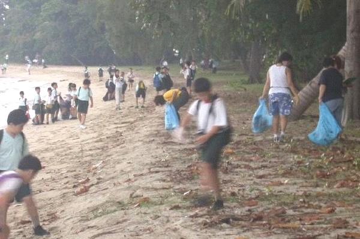

Saturday,
18th Sep 2004,
at beaches and mangroves around Singapor
(ICCS
2004)
To
join us as participants or to lead your school in the cleanup,
please email angeline@sivasothi.com
Please include your 1) full name, 2) postal address,
3) email address & 4) handphone number

Help protect our
marine life!
The International Coastal
Cleanup (ICC) is an annual international event coordinated by The Ocean
Conservancy. In almost 100 countries around the globe, volunteers remove
and collect data on marine trash that not only creates an eyesore on shorelines,
waterways and beaches but hurts marine life and the environment. The
data is used to educate and to encourage positive change in ourselves,
other individuals, organisations and governments.
The International Coastal
Cleanup Singapore (ICCS) now in its 13th year, annually involves some
2,000 volunteers who collect, categorise and dispose of several tonnes
of marine debris from beaches and mangroves around Singapore. Between
2001-3, some 10 tonnes of trash have been removed from just Kranji mangroves
alone! And plastic is the main component.
On World Environment Day
on 5th June this year, United Nations Environment Programme's Executive
Director Klaus Toepfer said "Plastic waste kills up to 1 million sea birds,
100,000 sea mammals and countless fish each year. Plastic remains in the
ecosystem to kill again and again."
Every year, this exercise
is coordinated by a small team of energetic individuals, and we are looking
to recruit others who will enjoy coordinating the cleanup, working with
students and contributing to the protection of marine life in Singapore.
You see, our theme this
year is "The Next Generation!"
We
are also recruiting the following:
1. Zone
Captains *recruited*
- Zone captains oversee
a zone consisting of several sites,
- Liase with leaders
of the volunteer groups/schools allocated to your zone,
- Attend a main committee
meeting on the Wed 14 Jul 2004: 6pm - 9pm,
- Attend a coordinators
workshop to understand the ops procedure,
- Conduct a recce of
field sites in early September,
- Work with volunters
on at 18 Sep 2004: 8am - 12pm
2. Assistant Data Manager/Web
Resources
- Assist the Data Manager
in collating national data on Sat 18 Sep 2004.
- Assist in maintaining
the ICCS webpage.
- Good knowledge in Microsoft
Excel program and webpage creating skills required.
3. Assistant Manpower
Officer
- Assist the Manpower
officer in confirmation of participants, confirmation site allocation.
- Liason with Zone Captains,
Site Buddies, leaders of volunteer groups.
4. Assistant Admin Officer
- Assist the Administrative
Officer in admin and coordination.
- Knowledge in handling
mailing lists, Microsoft Excel and Word useful or keen to learn.
5. Site Buddies
- Your role is to supervise
and educate students at the cleanup site, and to explain to them the
significance and far-reaching impact of this cleanup.
- A knowledge of the
marine ecosystems would be useful but can be learnt.
- Read and understand
"Why
cleanup?"
- Attend a coordinators
workshop / recce in early September (on a Saturday afternoon) to understand
the operations procedure for the actual cleanup and the site at which
you would be working at.
6. Mangrove officers
- Loading Captains, Weighing
Captains, Manpower Officer.
- Able to work as a team,
get dirty and wet, enjoy mannual labour, respond to sudden and frequent
changes in plans.
- Participate in both
Dry Ops (9am - 12pm) and Wet Ops (11am - 5pm).
If you are keen to join
the team (ICCS Otters), please email the ICCS Administrative Officer
Angeline Tay (angeline@sivasothi.com)
with your:
- Name
- Preferred role
- Email address
- Handphone/Tel No
She will contact you with
details.
Thank you, and
Cheerio!
N.
Sivasothi
Coordinator
International
Coastal Cleanup Singapore
Research
Officer
Raffles Museum of Biodiversity Research
Department of Biological Sciences
National University of Singapore |